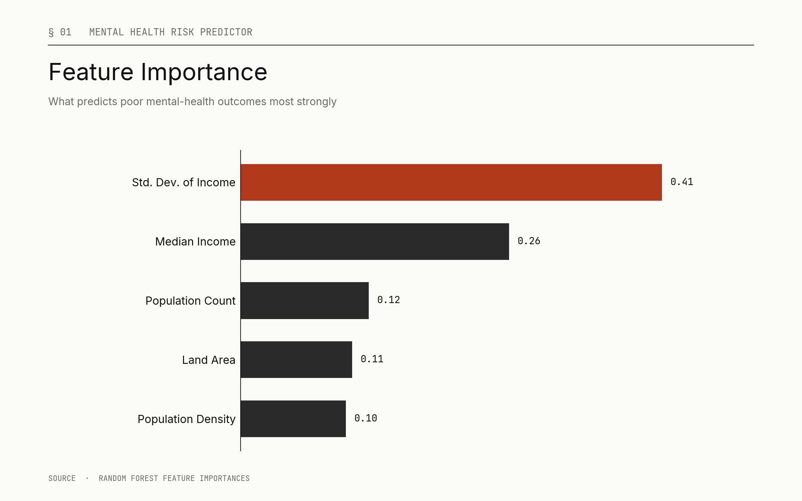

Data & Analysis
I own datasets end-to-end, from extraction and cleaning through analysis and visualization.
Python · SQL · R · AWS · Spark · Tableau
Engineering Linguist · Santa Cruz, CA
I bridge human language and machine intelligence, building, evaluating, and optimizing the linguistic backbone of ML systems.
Engineering Linguist at LinkedIn. I work at the intersection of computational linguistics and applied machine learning.
My focus is the unglamorous backbone of ML systems: annotation design, dataset hygiene, evaluation, and the iteration loop that turns a fragile model into a dependable one. Linguistics gives me a vocabulary for the problems machine learning quietly inherits from human language.
I own datasets end-to-end, from extraction and cleaning through analysis and visualization.
Python · SQL · R · AWS · Spark · Tableau
I design annotation schemes and evaluation frameworks that make language data legible to ML systems.
Praat · Syntax · Semantics · Phonology · Translation
I build, evaluate, and iterate on models, with a focus on the data quality that decides whether they work.
TensorFlow · Keras · PyTorch · NLP · Deep Learning
Interactive Tableau dashboards exploring Citi Bike usage patterns and rider behavior across the full August 2018 NYC trip dataset. Live, published on Tableau Public.

Predicting mental health risk factors from socioeconomic and environmental signals. Feature engineering surfaced income inequality, not income level, as the dominant predictor.

Deep learning classifier predicting charity-campaign success. Architecture iteration plus targeted feature engineering pushed the optimized run past the 75% accuracy target to 79%.
Open to roles, collaborations, and consulting in linguistics, machine learning, and data work.
Best reached via email or LinkedIn.